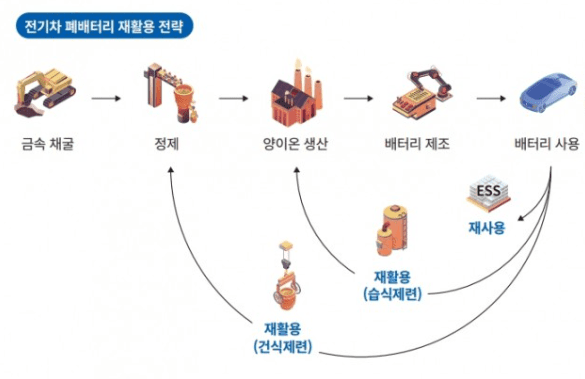

하이브리드 전기차는 엔진과 구동모터를 모두 장착한 자동차이다. 자동차가 출발할 때 및 저속 운행을 할 때는 고전압 배터리에 저장해 둔 전기로 모터를 작동해 주행하고, 나머지 구간에서는 엔진과 모터가 함께 작동된다.하이브리드 전기차는 엔진의 발전기와 회생제동 시스템에서 비롯된 전기만을 이용하기 때문에 외부에서 전기 에너지를 충전할 필요가 없어 충전 인프라에 얽매이지 않고 편리하게 사용 가능한 장점이 있다.
플러그인 하이브리드 전기차 역시 엔진과 구동모터를 장착한 자동차이다. 다만, 하이브리드 전기차보다 고전압 배터리의 용량이 더 크고, 외부 전기를 충전할 수 있는 시스템도 갖추고 있다. 따라서 전기 에너지로 주행할 수 있는거리가 길어져 배기가스 배출을 줄이는 데 도움을 줄 수 있다. 또한, 충전소에서 전기를 충전할 수 있어 전기 에너지만으로도 차량을 운행할 수 있고, 충전이 어려운 상황일 때는 엔진으로 운행이 가능해 편리하다.
전기차는 고전압 배터리에 저장된 전기 에너지만으로 달리는 자동차이다. 화석 연료를 전혀 사용하지 않아 배기가스 배출이 없고, 엔진 없이 모터로 움직여 소음 및 진동이 거의 발생하지 않는 특징이 있다. 최근 전 세계적으로 배기가스 규제가 심화되면서 친환경차로 주목받고 있다. 전기차는 출발과 동시에 최대 회전력을 사용할 수 있어 중저속에서의 가속 성능이 뛰어나다는 장점도 있다.
수소전기차는 전기차와 마찬가지로 전기 에너지로 모터를 구동해 주행한다. 차이점은 외부로부터 전기 에너지를공급받지 않고 연료 전지 시스템을 통해 차체 내에서 전기 에너지를 직접 생산한다는 점이다. 연료 전지 시스템은수소 탱크에서 공급받은 수소와 외부 공기에서 포집한 산소의 전기화학반응을 통해 전기 에너지를 생산한다. 외부공기로부터 산소를 추출하는 과정에서 공기정화시스템을 통해 이물질을 제거한 공기를 사용한 뒤 배출하기 때문에 대기를 정화하는 역할도 한다.
3.전기자동차의 환경적 이로움
youtube
4.전기자동차 한계와 해결방안
-폐배터리 쓰레기 문제
전기자동차의 보급이 활발해질 수록 전기자동차의 쓰레기인 폐배터리도 늘어날 예정이다. 리튬이온배터리의 수명은 7~10년으로, 2026년이 되면 10만 개에 육박할 것으로 추정된다.
국립환경과학원은 폐배터리를 산화코발트, 리튬, 망간, 니켈 등을 1% 이상 함유한 유독 물질로 분류하고 있다. 유독물질은 일반적인 쓰레기로 소각하거나 매장할 수 없다.
-폐배터리 재활용, 재사용 전략
재활용
독일 화학기업인 뒤젠펠트는 분쇄기로 리튬이온 배터리를 분쇄물질과 전해질 중 하나만 남을 때까지 분해해 파쇄된 재료로부터 이전의 원료인 흑연, 망간, 니켈, 코발트, 리튬 등을 얻는 기술을 개발했다.
코발트, 니켈 등 금속을 추출해 다시 전기차 배터리의 재료로 재활용한다. 리튬이온배터리 셀 내부에는 리튬 원자가 있어 전해질을 통해 금속 산화물 양극과 흑연으로 구성된 음극을 오간다. 이 가운데 금속 산화물에 니켈, 코발트, 망간 등이 포함돼 있는데 상당수는 희토류 등 희귀한 금속이다. 셀을 기계적으로 분해하면 이들 희토류를 회수할 수 있다.
이 물질들은 다시 모터용 배터리의 재생산에 투입되는데, 모든 배터리 구성요소의 96%를 재활용할 수 있는 것으로 알려졌다.

재사용
성능이 떨어진 배터리를 수리해 에너지 저장 장치(ESS)에 재사용한다. ESS에는 배터리 잔존성능이 초기 대비 70~80%만 돼도 10년 이상 사용할 수 있다.
5.늘어나는 전기자동차

연료전지
1.연료전지란?
연료전지란 수소와 산소의 화학반응을 이용하여 전기를 생산하는 친환경 수소 발전기술이다.2.연료전지의 구조
전해질을 사이에 두고 두 전극이 샌드위치의 형태로 위치하며 두 전극을 통하여 수소이온과 산소이온이 지나가면서 전류를 발생시키고 부산물로서 열과 물을 생성한다. 전지의 음극엔 수소, 양극엔 산소가 공급되면 음극을 통해들어온 수소 분자는 촉매에 의해 양자와 전자로 나뉜다. 양자는 연료전지의 중심에 있는 전해질을 통해 흘러가고전자는 외부 회로를 통해 이동하면서 전류를 흐르게 하며 양극에서는 다시 산소와 결합하여 물이 된다.전지 내의 화학에너지를 전기에너지로 전환하는 보통의 전지와 달리, 연료전지는 지속적으로 연료와 산소의 공급을 받아서 화학반응을 통해 지속적으로 전기를 공급한다.
3.연료전지의 장점
현재 개발되고 있는 연료전지 자동차들은 이미 내연기관의 약 2배 정도 되는 높은 효율을 보이고 있다.수소를 기존 연료에서부터 개질하여 얻었을 때를 가정하여 비교해 보았을 때도 같은 HV 여부일 때 연료전지 자동차의 효율이 더 높았다.
천연가스를 메탄올로 변환한 뒤 이를 개질기를 통하여 수소를 발생하여 연료전지 자동차에 공급하는 방법과 천연가스를 직접 개질하여 연료전지 자동차에 공급할 때의 효율을 비교해서 살펴보면 저렴한 가격을 고려했을 때 자동차용으로 사용될 석유의 대체에너지원으로서 충분히 가능성을 가지고 있음을 보여준다.
또한 일반 전지가 에너지 저장 장치의 개념이 강한 반면, 연료전지는 연료(수소)를 계속적으로 공급하는 한 전기를연속적으로 생산하기 때문에 내연기관과 마찬가지로 에너지 변환기 구로 볼 수 있다.
youtube
연료전지의 핵심 구성요소는 아노든, 캐소드, 전해질이 있다.
수소연료전지 자동차는 수소와 산소가 만나 물이 생성될 뿐이므로 유해한 배기가스가 전혀 나오지 않는다.
물론 공기 중 질소가 산소와 반응해 일부 이산화질소로 변환되므로 완전한 무공해는 아니지만 기존의 화석연료를사용하는 자동차에 비해 배출량이 대단히 적다.
환경오염이 심각해지고 있는 요즘, 환경을 보호하는 전기자동차, 화석연료의 대안으로 떠오른 연료전지 사용을 늘려 환경보호에 동참해 보는 것은 어떨까?